Accueil
Adopter
Qui sommes nous ?
Nos chats
Des nouvelles de nos chats
Ils nous ont quittés
Nous aider
Nos actions
Nos actions récentes
Archives
Gazette
Contacts
DES NOUVELLES DE NOS CHATS!
Retrouvez ici des nouvelles de nos chats qui ont trouvé leur famille pour la vie !